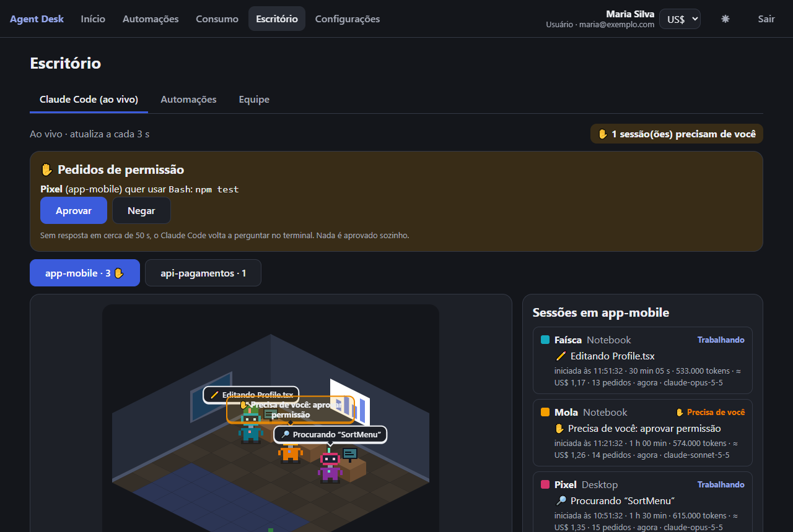
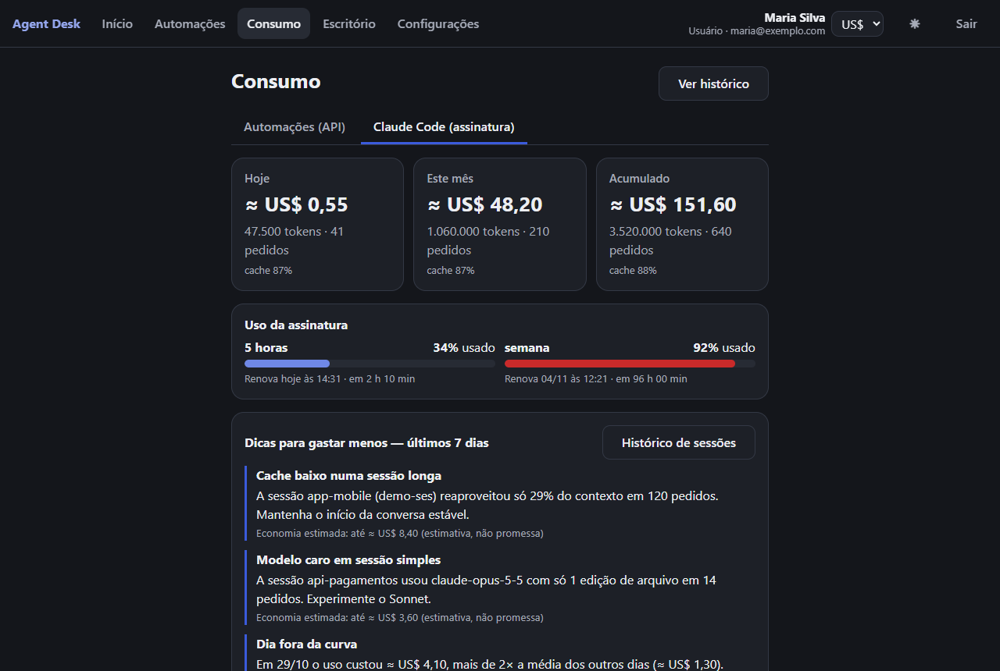
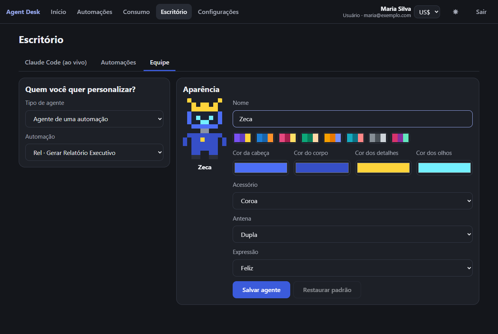
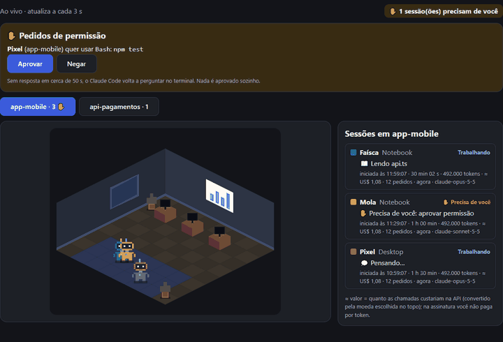

AgentDesk — guia de uso
Veja o que seus agentes estão fazendo, quanto cada um gasta e controle tudo pelo navegador ou pelo celular. Este guia mostra o que o sistema oferece e o que você precisa fazer no seu projeto para ter esse controle.
1. O que o AgentDesk faz
⚙️ Automações
Fluxos de 1 clique (resumir documento, analisar código, relatório executivo) que usam a Claude com a sua chave.
📊 Consumo
Tokens e custo de hoje, do mês e acumulado; gráfico por dia; ranking; histórico de cada chamada; limite mensal.
🏢 Escritório
Cada agente e cada sessão do Claude Code é um robô. Você vê quem trabalha, quem espera por você e quanto gastou.
🖥️ Claude Code ao vivo
Acompanha as sessões do Claude Code dos seus projetos: atividade, tokens, cache, dicas de economia e barras de 5 h e da semana.
✋ Controle
Parar uma sessão, Aprovar/Negar permissões e mandar tarefas ao Claude Code do seu PC, pelo app.
🔔 Alertas e moedas
Aviso no celular quando algo termina ou pede você. Valores em US$, R$, € ou £.

2. Dois tipos de gasto (leia primeiro)
| Automações (API) | Claude Code (assinatura) | |
|---|---|---|
| Como funciona | Você executa um fluxo no AgentDesk e ele chama a Claude com a sua chave. | Você usa o Claude Code normalmente no PC; o AgentDesk só acompanha. |
| Quem paga | Dinheiro real, por token, na conta da sua chave. | A assinatura (Pro/Max ou da empresa). Não há cobrança por token. |
| Valor mostrado | Custo calculado pela tabela de preços (estimativa). | ≈ US$ equivalente: quanto custaria na API. Serve para comparar e achar desperdício. |
| O que limita | Seu limite mensal em US$. | As janelas de 5 horas e da semana. |
| Onde ver | Consumo → painel principal e Histórico | Consumo → aba "Claude Code (assinatura)" |
3. Primeiros passos
Peça ao administrador o endereço do AgentDesk da equipe (precisa começar com https://). Depois:
- Crie sua conta na tela inicial.
- Vá em Configurações, cole a sua chave da Anthropic (
sk-ant-...) e clique Testar chave. O teste não gasta tokens. A chave fica guardada cifrada e nunca é mostrada de volta (só os 4 últimos caracteres). - Escolha o modelo padrão.
- Defina o limite mensal em US$ (veja a seção 9).
- Escolha a moeda no seletor do topo.
4. Automações
Tela Automações. Vêm três fluxos prontos:
| Fluxo | Modelo inicial | Uso |
|---|---|---|
| Gerar Relatório Executivo | Opus 5.5 | Transforma texto em relatório. |
| Analisar Código | Opus 5.5 | Revisão de um trecho de código. |
| Resumir Documento | Haiku 5.5 (mais barato) | Resumo rápido. |
- Escolha o fluxo.
- Cole o texto ou envie um arquivo
.txt/.md(até 200 KB). - Se quiser, troque o modelo para essa execução.
- Clique Executar. Dá para Cancelar enquanto roda.
- O resultado mostra tokens, custo e duração; use Copiar ou Baixar .md.
- O texto que você envia não é guardado; o resultado fica no histórico.
- Se o limite mensal estiver estourado e o bloqueio ligado, o AgentDesk avisa e nem chama a Claude.
- O administrador pode editar os prompts dos fluxos.
5. Acompanhar o consumo
- Painel: hoje, mês e acumulado; barra do limite (alerta a partir de 80%); custo por dia; ranking por automação. Atualiza sozinho.
- Histórico: cada chamada com data, automação, modelo, tokens, custo, duração e status (sucesso, erro, recusada). Filtre por período, automação, modelo e status; abra o resultado de qualquer chamada.
- Administrador: alterna entre "Meu consumo" e "Todos os usuários", vendo quem rodou cada chamada.

6. Escritório
Tela Escritório, com três abas: Claude Code (ao vivo), Automações e Equipe.
- Cada projeto do Claude Code é uma sala; cada sessão é um robô (até 8 por sala). Subagentes aparecem como robôs ajudantes.
- Clique no robô: atividade atual ("📖 Lendo api.ts", "💻 Rodando npm test"), horário de início, duração, tokens e custo equivalente.
- Nas Automações, o robô anda até a mesa, mostra "pensando…" e, ao terminar, um balão com tokens e custo.
| Status | Significa |
|---|---|
| Trabalhando | Processando um pedido ou usando uma ferramenta. |
| ✋ Esperando você | Pediu permissão ou fez uma pergunta. Fica em destaque e avisa no celular. |
| Ociosa | Terminou e espera o próximo pedido. |
| Encerrada | Sessão fechada; some da sala em 15 minutos. |
Duas pastas com o mesmo nome podem ser unidas num grupo com Juntar salas. Na aba Equipe você muda nome, cores, acessório, antena e expressão de cada robô (botão Personalizar na sala).

7. Usar no seu projeto: conectar o Claude Code
Para que as sessões do Claude Code de um projeto apareçam no Escritório e no painel de tokens, conecte o seu computador uma vez. Vale para todos os projetos que você abrir depois.
Você precisa de: Node 18 ou mais novo, Claude Code instalado e o endereço do AgentDesk com https://.
- No AgentDesk, vá em Configurações → Claude Code. Dê um nome ao computador (ex.: "notebook-joao") e clique Gerar token e comando.
- Copie o comando (versão Windows ou macOS/Linux). O token aparece só uma vez e é pessoal: não compartilhe nem coloque em repositório.
- Cole no terminal do computador. O instalador faz backup do seu
~/.claude/settings.json, adiciona o que precisa sem apagar suas configurações e envia uma sessão de teste (sala "agentdesk-teste"). - Abra uma sessão nova do Claude Code na pasta do seu projeto.
- Veja o robô em Escritório → Claude Code (ao vivo). A sala tem o nome da pasta do projeto.
O que você passa a ter por projeto
- Sala própria com os robôs das sessões e subagentes daquele projeto.
- Consumo do Claude Code por projeto e por modelo (aba Claude Code do Consumo).
- Taxa de cache, dicas de economia e histórico de sessões com linha do tempo.
- Barras de uso de 5 horas e da semana (planos Pro/Max, depois da primeira resposta da sessão).
- Parar, Aprovar/Negar e alertas no celular.
Manutenção
# atualizar o coletor quando houver versão nova (mantém o mesmo token)
node ~/.agentdesk/agentdesk-coletor.mjs atualizar
# remover tudo que foi instalado
node ~/.agentdesk/agentdesk-coletor.mjs desinstalarNo Windows PowerShell, use $HOME no lugar de ~. Depois de desinstalar, revogue o token em Configurações. Um token por computador; dá para ter até 10.
Claude Code na nuvem
Um ambiente de nuvem é outra máquina e precisa do próprio coletor. Em Configurações → Claude Code → Nuvem o AgentDesk gera dois blocos: as variáveis de ambiente e o script de preparação. Cole nas configurações do ambiente. O token fica só nas variáveis, nunca no repositório, e o ambiente precisa alcançar o endereço do AgentDesk pela rede.
8. Parar, aprovar e mandar tarefas
Parar e Aprovar/Negar
- Quando o Claude Code pede permissão, o pedido aparece em ✋ Pedidos de permissão. Clique Aprovar ou Negar.
- Sem resposta a tempo, o Claude Code pergunta no terminal como de costume. Nada é aprovado sozinho.
- Parar na sessão selecionada pede ao Claude Code para interromper.
- Não quer esse controle? Instale com a opção
--sem-controle.

Mandar uma tarefa para o Claude Code do seu PC
- No PC, dentro da pasta do projeto, libere a pasta. Só você, no PC, decide quais pastas aceitam tarefas; o caminho nunca sai do computador:
node ~/.agentdesk/agentdesk-coletor.mjs liberar - Deixe o coletor escutando, num terminal aberto:
(Se onode ~/.agentdesk/agentdesk-coletor.mjs escutarclaudenão estiver no PATH, acrescente--claude CAMINHO.) - No app: Escritório → Claude Code (ao vivo) → Mandar tarefa. Escolha computador e pasta, escreva a tarefa (até 4000 caracteres) e clique Enviar tarefa.
- Um robô aparece na sala do projeto; Parar e Aprovar/Negar funcionam nele.
escutar aberto. O texto da tarefa fica guardado no servidor: não digite senhas ou chaves. Esta função ainda não foi validada com o claude real, só com um simulado.9. Como controlar os gastos
- Defina seu limite mensal (Configurações). A 80% aparece o alerta; a 100%, com "bloquear ao atingir" ligado (padrão), as automações param antes de gastar. Comece baixo e suba conforme o uso real.
- Use o modelo certo. Modelos menores para tarefas simples. O administrador mantém a tabela de preços e pode desativar modelos caros.
- Olhe o painel toda semana (5 minutos): dia fora da curva, ranking por automação, projetos que mais consomem.
- Siga as dicas do Claude Code (aba Claude Code):
- Cache baixo: menos de 60% de aproveitamento com 5+ pedidos. Sessões longas demais ou contexto trocando muito.
- Sessão gigante: 150+ pedidos ou 20 milhões+ de tokens. Prefira sessões curtas e focadas.
- Muitas compactações: 3 ou mais. Divida o trabalho.
- Modelo caro: Opus/Fable em trabalho simples. Troque por um modelo menor.
- Dia fora da curva: custo do dia mais que o dobro da média.
- Acompanhe as barras de 5 h e da semana: verde, laranja a partir de 70%, vermelho a partir de 90%, com a hora da renovação.
- Para um teto que ninguém fura (sobretudo em equipe), configure também o limite de gastos no Console da Anthropic e use uma chave por pessoa ou por projeto.
10. Alertas, moedas e equipe
- Alertas no celular: em Configurações → Alertas no celular, ative o aparelho. Você é avisado quando uma automação termina ou falha, quando uma sessão termina e quando ela precisa de você. No iPhone, só no app instalado (Adicionar à Tela de Início). Cancelar uma automação não gera aviso.
- Instalar como app: use "Adicionar à tela inicial" no navegador. Quando sair versão nova, aparece "Atualizar".
- Moedas: US$, R$, € ou £ no seletor do topo. Os dados são guardados em dólar; a conversão é só na exibição, pela cotação PTAX do Banco Central.
11. O que sai do seu computador
✅ Sai
Nome da pasta do projeto, ferramenta usada, nome do arquivo (sem caminho), as duas primeiras palavras de um comando (sem o que parece segredo), domínio de URL, contagem de tokens e custo.
🚫 Não sai
Código-fonte, texto dos seus prompts, respostas da Claude, caminhos completos de pastas.
- Sua chave da Anthropic é cifrada e nunca volta ao navegador.
- O token do coletor é pessoal; só o hash fica guardado. Revogue em Configurações quando trocar de computador ou sair da equipe.
- Cada pessoa só vê os próprios dados (o administrador vê o consumo de todos).
12. Problemas comuns
| Sintoma | O que fazer |
|---|---|
| Sessão não aparece no Escritório | Abra uma sessão nova depois de instalar; confira se o endereço tem https:// e se o computador alcança o servidor; rode atualizar; veja se o token não foi revogado. |
| "Limite mensal atingido" | Suba o limite em Configurações ou desligue "bloquear ao atingir". |
| Chave inválida / sem crédito | Confira a chave e o saldo no Console da Anthropic; teste a chave em Configurações. |
| Erro de limite de taxa | Muitas chamadas seguidas; tente de novo em instantes. |
| Sem barras de 5 h/semana | Só planos Pro/Max, só depois da primeira resposta da sessão. Se instalou há tempo, rode atualizar. |
| Alerta no celular não ativa | Precisa de HTTPS; no iPhone, só no app instalado (iOS 16.4+). |
| Valores em dólar mesmo escolhendo R$ | A cotação do Banco Central está indisponível no momento; volta sozinha. |
| "Tarefa expirada" | O escutar não estava aberto no PC; abra e envie de novo. |
AgentDesk é um projeto independente, não um produto oficial da Anthropic; "Claude" é marca da Anthropic.